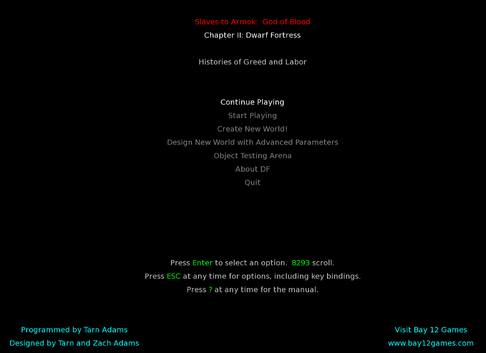
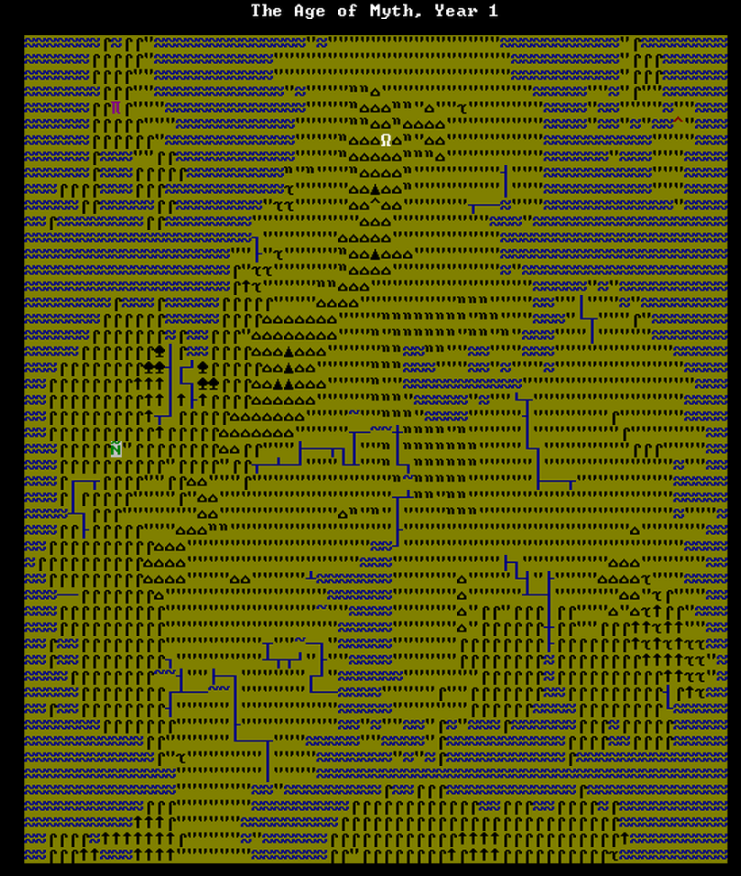

Question par catégorie
 Voici les différentes questions qu'on peut se poser par catégories.
Voici les différentes questions qu'on peut se poser par catégories.
Voici les différentes questions qu'on peut se poser par catégories.
 Voici les différentes questions générale qu'on peut se poser.
Il n'y a pas vraiment de but dans le jeu.
Le joueur est libre de faire ce qu'il veut que ce soit dans les modes Forteresse ou Aventure.
Il existe quand même une série d'objectifs à réaliser pour les deux modes.
Non, nous ne pouvons pas gagner dans ce jeu. Il n'existe aucune condition de victoire par contre il existe des conditions de défaite.
De fait, nous ne pouvons que perdre dans ce jeu. Mais n'oubliez pas, "Loosing is fun".
 Voici les différentes questions qu'on peut se poser pour le mode Forteresse.
Voici les différentes questions qu'on peut se poser pour le mode Forteresse.
Pour survivre à l'hiver, vous avez besoin de trouver des sources de nourritures et de trouver de quoi boire. Si vous arrivez à survivre au premier hiver, vous survivrez au suivant. Pour cela, n'hésitez pas à prendre avec vous plus de boissons et de nourritures pendant la préparation de votre voyage.
Ensuite, pendant votre première année, essayez d'engranger le maximum de nourriture par tous les moyens possibles.
Enfin, essayer de distiller le maximum d'alcool et créez un puit à l'intérieur de votre forteresse. (Avoir un aquifère peut vous aider fortement dans la création du puit, sinon il vous faudra creuser vous même votre réservoir d'eau en-dessous du puit)
Pour construire votre forteresse, vous aurez besoin de creuser vos murs avec vos mineurs. Vous pouvez aussi décider de construire des pièces avec les matériaux que vous aurez amassés.
Donner des ordres se fera dans le menu designation pour ce qui est de creuser, ramasser des plantes, couper des arbres. Mais pour ce qui est de la création d'objet, les ordres se feront depuis les ateliers.
Nous vous invitons à lire le tutoriel consacré au champ.
Pour placer un objet, vous devrez l'avoir en magasin. Soit vous l'aurez construit dans l'un de vos atelier soit vous l'aurez acheté. Une fois l'objet construit, vous n'aurez qu'à le sélectionner dans le menu objet et à le placer.
 Voici les différentes questions qu'on peut sur le mode aventure.
Voici les différentes questions qu'on peut sur le mode aventure.
Pour recruter quelqu'un, il suffit de lui demander. Regardez l'option "Ask to join to you" dans les choix de dialogue.
La chasse et la cueillette sont de bon moyens de se procurer de la nourriture.
Les rivières vous donneront de bonnes ressources d'eau. N'oubliez pas de remplir votre gourde d'eau. Vous pouvez voir dans le tuto comment faire l'hiver quand les rivières sont gelées.
Parlez aux gens et demandez leur quels sont les troubles dans la région. Il vous indiqueront les problèmes qu'ils ont.
 Voici les différentes questions qu'on peut se poser sur le mode légende.
Il vous suffit de regarder dans la liste des "Historical Figures".
Il vous suffit de regarder dans Age du monde.